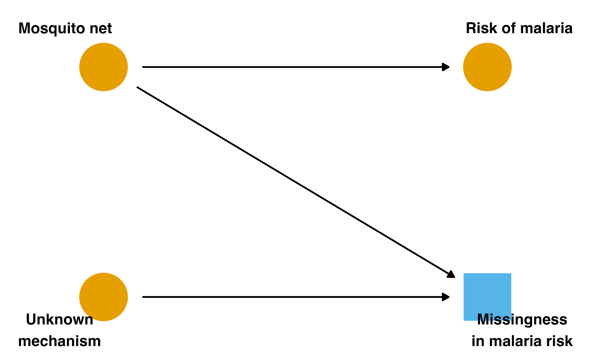
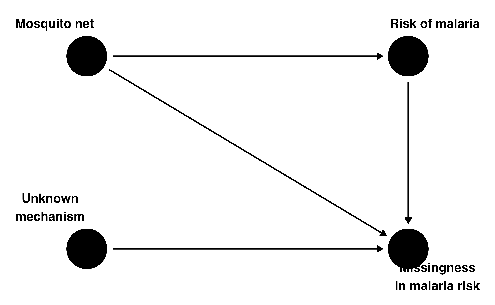
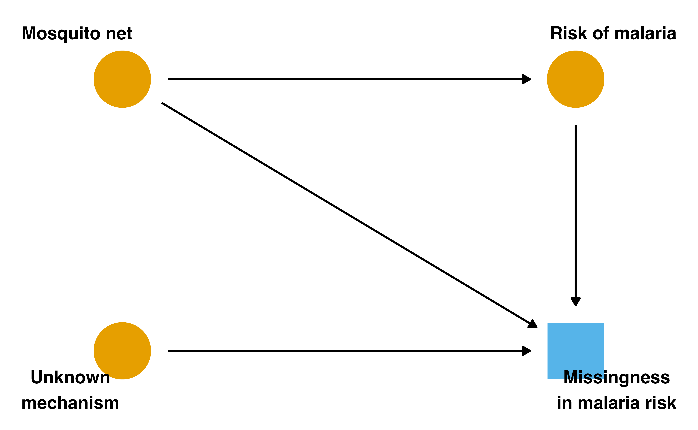
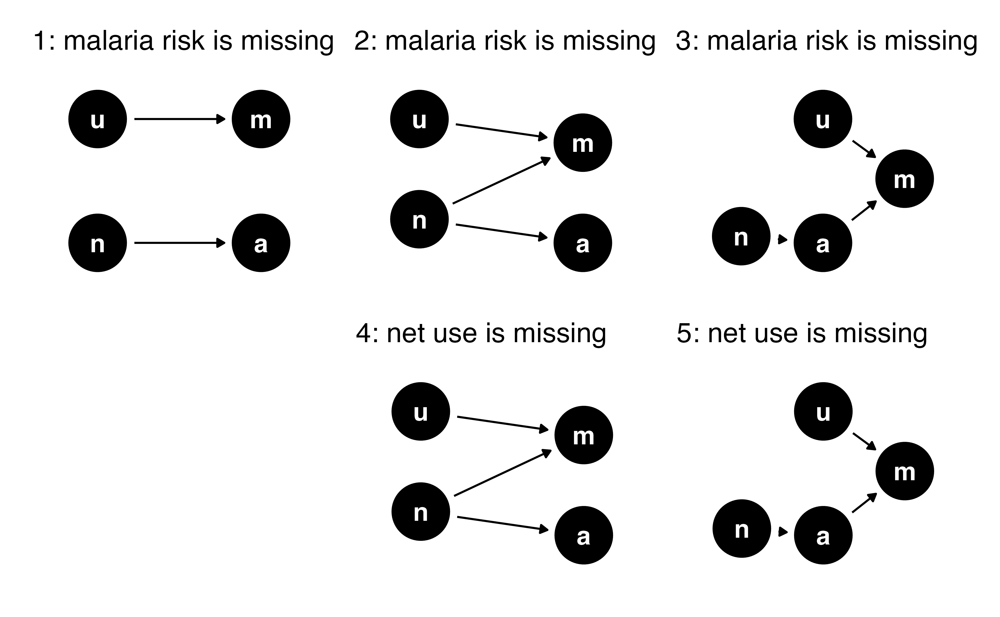
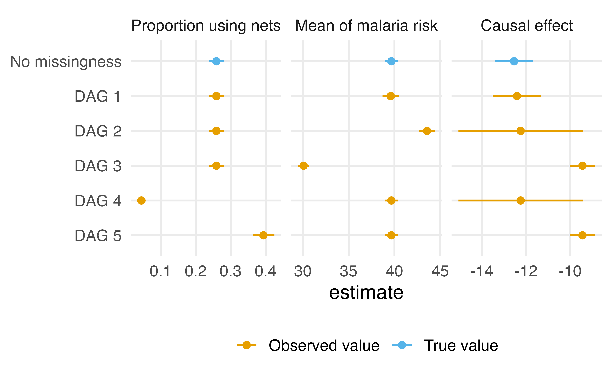
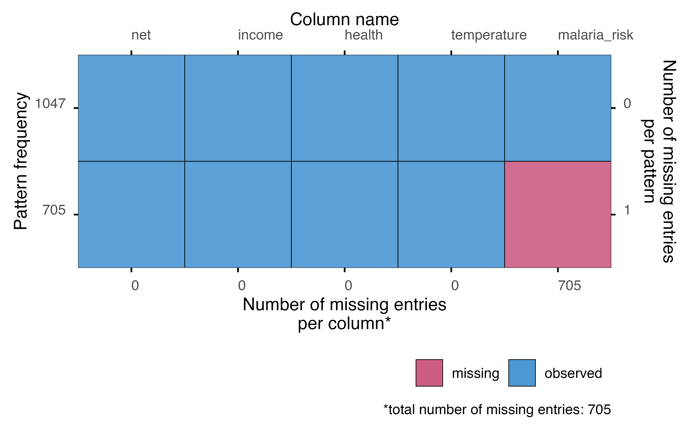
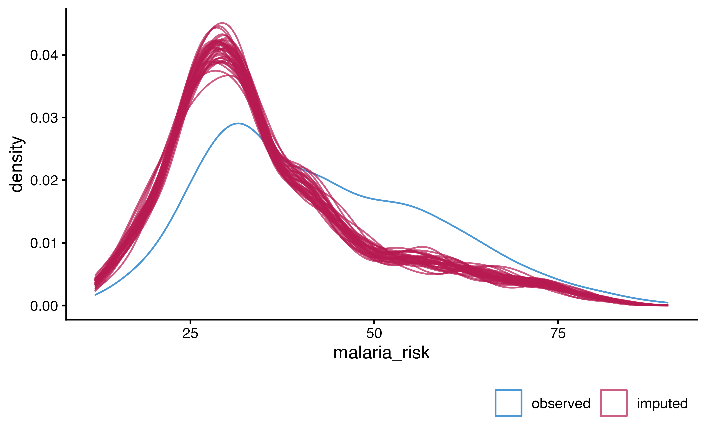
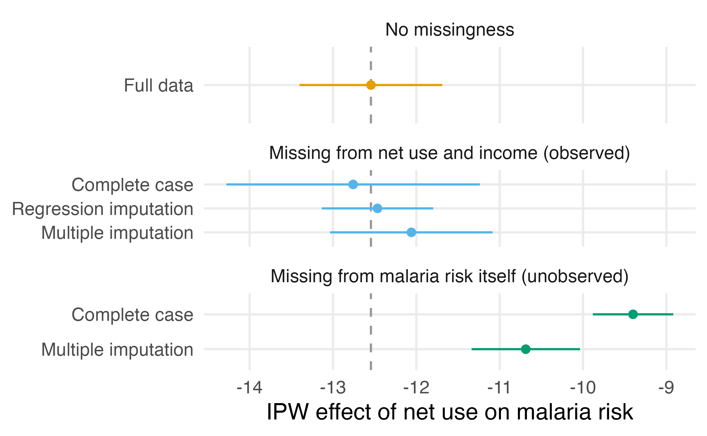

# A tibble: 1 × 3
days missing_actual prop_missing
<int> <int> <dbl>
1 354 207 0.585
At the 9 AM hour, 207 of 354 days are missing the actual wait time; across the full data, 88.7% of actual wait times are missing
A known benchmark
The malaria data has no missing values, so we will remove some on purpose
Then we compare each remedy to the answer we already know
The benchmark: the full-data IPW estimate of the effect of net use on malaria risk, -12.5 (from the outcome model module)
The missingness indicator
Two nodes for one variable
We draw two nodes for a given variable: one represents the true values, and the other represents a missingness indicator, whether we observed the value or not
We are always conditioning on the data we actually have
Two nodes for one variable
With missingness, that usually means conditioning on complete observations: the subset where every variable we need is observed
A DAG with missingness
When complete cases are enough
Conditioning on the indicator

Recoverable effects
The causal effect is recoverable: we can still estimate it without bias with complete-case analysis
Because we only use complete observations, we have a smaller sample size and thus reduced precision
We are unable to correctly estimate the mean of malaria risk because values are systematically missing by net use
When complete cases are not enough
Missingness from the value itself
Is it feasible that the missingness of malaria risk is related to its own values?
It could be that a person’s malaria risk is so severe that the measurement never happens
An arrow from the outcome

Conditioning now opens a backdoor

No way to close it
Whether malaria risk was measured is now a descendant of both the exposure and the outcome
Conditioning on the indicator opens a backdoor path, creating nonexchangeability
There is no way to close the backdoor path opened by conditioning on missingness
More than backdoor paths
What effects we can recover is more complicated than determining backdoor paths alone
More than backdoor paths
When there are no backdoor paths, we can calculate the causal effect, but we may not be able to calculate other statistics, like the mean of the exposure or outcome
When conditioning on missingness opens a backdoor path, sometimes we can close it, and sometimes we cannot
Five structures of missingness
Five DAGs
Consider five DAGs, where a is malaria risk, n is net use, u is unknown, and m is missing
Each represents a simple but differing structure of missingness
In DAGs 1-3, malaria risk has missingness; in DAGs 4-5, net use does
Five structures

What we can estimate

Further reading
See Moreno-Betancur et al. (2018) for a comprehensive overview of what effects are recoverable from different structures of missingness
Moreno-Betancur M, Lee KJ, Leacy FP, White IR, Simpson JA, Carlin JB (2018). Canonical causal diagrams to guide the treatment of missing data in epidemiologic studies. American Journal of Epidemiology. doi:10.1093/aje/kwy173
MCAR, MAR, and MNAR
Three terms you will see
In the grand tradition of statisticians being bad at naming things, you will also commonly see missingness discussed in terms of missing completely at random, missing at random, and missing not at random
We can explain these ideas by the causal structure of missingness and the availability of variables and values related to that structure in your data
Missing completely at random
MCAR: there are missing values, but the causes of missingness are such that the missingness process is unrelated to the causal structure of your question
In other words, the only problem with missingness is a reduction in sample size
This is structure 1, where the only cause of missingness is the unknown mechanism
Missing at random
MAR: the causes of missingness are related to the causal structure of the research problem, but missingness only depends on the variables and values in the data that we have actually observed
This is structure 2, where the missingness of malaria risk depends on net use, which we always observe
Missing not at random
MNAR: the causes of missingness are related to the causal structure of the research problem, but the process is related to values we are missing
A classic example is when a variable’s missingness is impacted by itself: higher values of x are more likely to be missing in x, as in structure 3
We do not have that information because, by definition, it is missing
Malaria risk now goes missing more often for net users and for higher-income households: about 40% of the values are missing, for reasons we can see in the data
The IPW pipeline
fit_ipw_net <-function(.data) { propensity_model <-glm( net ~ income + health + temperature,family =binomial(),data = .data ) weighted_data <- propensity_model |>augment(type.predict ="response", data = .data) |>mutate(wts =wt_ate(.fitted, net, exposure_type ="binary")) ipw_model <-lm(malaria_risk ~ net, data = weighted_data, weights = wts)ipw(propensity_model, ipw_model)}
The pipeline from the outcome model module: propensity score model, ATE weights, weighted outcome model, ipw()
-12.8 (95% CI -14.3, -11.2): the effect survives, with a wider interval, as the missingness DAG suggested
Complete-case analysis
We filtered to the complete cases ourselves before fitting either model
Had we let lm() drop the missing rows silently, ipw() would error: the propensity score model would see all 1752 rows and the outcome model only the 1047 complete ones
Complete-case analysis
Complete-case analysis is an analytic choice, and here we have to make it explicitly
The effect is recoverable here, but the mean of malaria risk is not: the complete cases average 42.6 against the full-data 39.7
Regression imputation
The analysis variables predict malaria risk well, so we can use them to fill in the values we failed to measure
Fit a model for malaria risk on the complete cases, then plug its prediction in wherever the value is missing
Regression imputation
When fitting imputation models, include every variable that appears in your later models, in the same form it takes there
Regression imputation
imputation_model <-lm( malaria_risk ~ net + income + health + temperature,data = net_data_mar)net_data_imputed <- imputation_model |>augment(newdata = net_data_mar) |>mutate(malaria_risk =coalesce(malaria_risk, .fitted))
coalesce() keeps the observed value where we have one and uses the model’s prediction where we do not
-12.5 (95% CI -13.1, -11.8): very close to the benchmark
Standard errors after imputation
Each of the 705 missing values got a single predicted value, and the outcome model then treated it like real data
Standard errors after imputation
The standard error is 0.34, narrower than the 0.44 we had with no missing data at all
Imputed values cannot make us more certain than measured ones
Standard errors after imputation
If you use this approach, include the fitting of the imputation model in your bootstrap so the standard errors reflect its uncertainty
Deterministic imputation understates uncertainty
Multiple imputation
Single imputation is inefficient
Regression imputation relies on a single imputed value for each missing observation
Done correctly, with the imputation model inside the bootstrap, this plug-in approach is generally inefficient: we end up with wide confidence intervals, reflecting the fact that we relied on a single imputed value
Single imputation is inefficient
Multiple imputation instead draws predicted values from a distribution, capturing the uncertainty inherent in the missing data
Many completed datasets
We generate several completed datasets whose imputed values differ from draw to draw
The values we observed are identical in every dataset; the values we imputed vary
The variation between datasets is the uncertainty from the imputation
Two rules for causal imputation models
The imputation model must include every variable in the outcome model and the propensity score model: the confounders, the exposure, and the outcome itself
Two rules for causal imputation models
Mirror the same functional forms you will use downstream: if a variable gets a spline or an interaction later, it needs one in the imputation model too
A typical causal analysis
Impute multiple completed datasets with a model that includes the outcome and all covariates
Estimate the treatment effect within each dataset: propensity score model, weights, weighted outcome model
A typical causal analysis
Pool the estimates with Rubin’s rules to get one effect and valid standard errors
Rule of thumb: the number of imputations should roughly match the percentage of incomplete cases
The missingness pattern
plot_pattern() shows which variables are missing and in what combinations: here, one block of 705 rows missing malaria risk
library(ggmice)plot_pattern(net_data_mar)
The missingness pattern

Interactions in the imputation model
In the malaria data, the effect of net use on malaria risk varies with income
An imputation model with only main effects would fill in values from an effect that is too weak, and the pooled estimate would inherit that bias
Interactions in the imputation model
Rule 2 again: the marginal effect averages over that heterogeneity, so the imputation model has to represent it
Predictive mean matching fills each missing value with an observed value borrowed from a case whose prediction is close
About 40% of the cases are incomplete, so the rule of thumb says about 40 imputations; we use m = 40
Observed versus imputed
The imputed values should be plausible, and their distribution should reflect the mechanism
ggmice(imp, aes(x = malaria_risk, group = .imp)) +geom_density()
Observed versus imputed

Reading the densities
The observed values (blue) center higher than the imputed values (red)
That is what the mechanism implies: net users are missing malaria risk more often, and net users have lower risk
Reading the densities
The imputation model can see this because net use is one of its predictors
Forty completed datasets
# mice masks tidyr::complete(), so name the package explicitlycompleted <- mice::complete(imp, action ="all")length(completed)
[1] 40
Each element is the whole dataset with the missing malaria risk values filled in
Fit within each imputation
fits <- completed |>map(\(.df) { ps <-glm( net ~ income + health + temperature,family =binomial(),data = .df ) w <-wt_ate(fitted(ps), .df$net, exposure_type ="binary") om <-lm(malaria_risk ~ net, data = .df, weights = w)ipw(ps, om) })
Fit within each imputation
map() runs the pipeline once per completed dataset: forty propensity score models, forty sets of weights, forty outcome models, forty ipw() results
Refit the propensity model every time
The whole analysis is rebuilt inside each imputation, including the propensity score model
Averaging the propensity scores across imputations and weighting with one averaged set hides the propensity model’s estimation uncertainty from the pooling step
Refit the propensity model every time
Here only the outcome is imputed, so each refit returns the same model; when confounders or the exposure have missingness, the refits differ, and that variation belongs in the pooled standard error
The propensity score model is part of the analysis, so it belongs inside the imputation loop
# A tibble: 1 × 4
pooled within_var between_var pooled_se
<dbl> <dbl> <dbl> <dbl>
1 -12.1 0.163 0.0798 0.495
The pooled estimate is the average across imputations; its variance is the average within-imputation variance plus the between-imputation variance, inflated by 1 + 1/m
-10.7 (95% CI -11.3, -10.0): closer to the benchmark than the complete cases, but the interval still excludes it
Why imputation cannot help
When missingness depends on the missing values themselves, conditioning on the indicator opens a backdoor path that nothing observed can close
The imputation model only sees the observed values, and under this mechanism they are a truncated sample
Why imputation cannot help
Multiple imputation moves the estimate toward the benchmark, but it does not reach it
The DAG said as much: there is no way to close the path
What to do instead
Sensitivity analyses let you probe what you cannot verify; the tools from the tipping point module apply to missingness as well
When missingness is designed into a study as censoring, weight for it directly with inverse probability of censoring weights, covered in the selection bias module
Comparing the estimates

Comparing the estimates
Under a recoverable structure, every remedy sits near the benchmark, and multiple imputation reflects the added uncertainty in its standard error
Under missingness driven by the values themselves, neither estimate is trustworthy: both miss the benchmark, and neither interval includes it
Comparing the estimates
The data look much the same under both mechanisms; only the structure tells them apart
Your Turn
Work through Your Turns 1-3 in 15-bonus-missingness-exercises.qmd